Добро пожаловать на страницу города Седона
Седона — небольшой городок в Аризоне, заслуживающий большего!
Рассмотрим 5 причин, по которым Седона круче, чем Гранд Каньон!
Преимущества
Настоящий городок
— №1 —Седона — не аттракцион для туристов, там течет своя жизнь
Жилье
Рекомендуем пожить в настоящем мотеле, все как в кино!
Сувениры
Не только китайского, но и местного производства!
Еда
Всегда заказывай фирменный бургер, вы не разочаруетесь!
Там есть
мост дьявола
— №2 —
Да, по нему можно пройти! Если конечно вы осмелитесь
Небольшая площадь
— №3 —Все достопримеча тельности находятся очень близко
Красивая дорога
— №4 —Ехать в Седону из Лас-Вегаса совсем не скучно!
Мало туристов
— №5 —Большинство едет в Гранд Каньон и толпится там
Поиск гостиницы в Седоне
Заинтересовались?
Укажите предполагаемые даты поездки,и мы покажем вам лучшие предложения гостиниц в Седоне